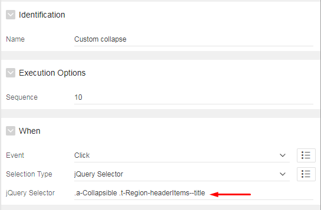

I can imagine that, at least once you had the need to do some unusual tweak in your app that may seem simple at first, but when you dive into solving the problem, the solution might not come to you as quick as you thought.
Check out how you can collapse and expand collapsible region when you click somewhere else instead of button with help of some custom jquery. First you need to add dynamic action on Click
with jQuery selector .a-Collapsible .t-Region-headerItems--title:

Note: Make sure that in jQuery Selector you point to t-Region-headerItems--title instead of t-Region-header, because if you do that, your custom action will work but you will loose default button collapse action.
Next step - in True action add the following code:
After you did that, you can add CSS to make it look more natural. You simply add it to your theme roller or page css, depending of scope in which you want it to be active: